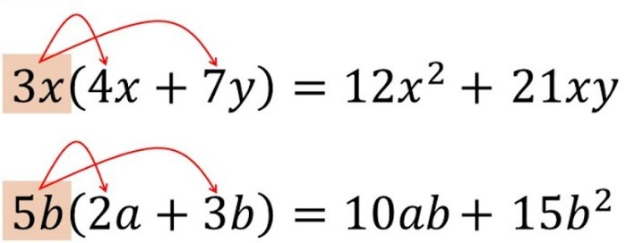
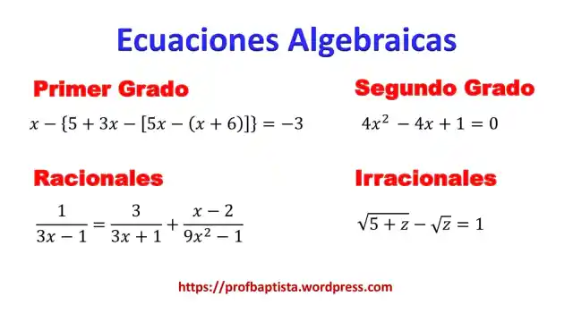

Introducion sobre matematica
Las matemáticas son una ciencia fundamental que estudia números, estructuras, patrones y cambios. A través de ramas como la aritmética, el álgebra, la geometría, y el cálculo, las matemáticas nos permiten resolver problemas, comprender el mundo que nos rodea y aplicar conocimientos en áreas como la ingeniería, las ciencias, y la economía. Su lenguaje simbólico y lógico proporciona herramientas esenciales para el análisis y la toma de decisiones en múltiples disciplinas, haciendo de las matemáticas una parte integral del avance tecnológico y científico.
Video
Aqui hay un video explicativo
Aritmetica
La aritmética es la rama más básica y fundamental de las matemáticas, que se ocupa del estudio de los números y las operaciones básicas que se pueden realizar con ellos. Estas operaciones incluyen la suma, resta, multiplicación y división. La aritmética es una herramienta esencial en la vida diaria y es la base sobre la cual se construyen muchas otras áreas de las matemáticas.
Principales Operaciones Aritméticas:
Es la rama más básica de las matemáticas, centrada en el estudio de números y operaciones como suma, resta, multiplicación y división. Es la base para todas las demás ramas matemáticas y es fundamental en la vida cotidiana. Incluye el manejo de fracciones, decimales, potencias, raíces, Mínimo Común Múltiplo (MCM), y Máximo Común Divisor (MCD). Se utiliza en finanzas, ciencias, ingeniería, computación, y en la toma de decisiones diarias.
Suma (+):
- Es la operación que combina dos o más números para obtener un total.
- Ejemplo: 3+5=8
Resta (-):
- Es la operación que combina dos o más números para obtener un total.
- Ejemplo: 10−4=6
Multiplicación (×):
- Es la operación que suma un número consigo mismo varias veces. Es una forma abreviada de sumar el mismo número repetidamente.
- Ejemplo: 4×3=12
División (÷):
- Es la operación que determina cuántas veces un número cabe dentro de otro. Es el proceso inverso de la multiplicación.
- Ejemplo: 12÷4=3
Aqui hay unos ejercicios basicos de las principales operaciones
Aplicaciones Ampliadas de la Aritmética
Computación:
- Algoritmos: Los cálculos aritméticos son esenciales para la programación de algoritmos en computadoras. La aritmética binaria es fundamental para el funcionamiento de los sistemas digitales.
- Criptografía: La aritmética modular se utiliza en criptografía para asegurar la transmisión de información.
Ciencias:
- Física: Los cálculos aritméticos son la base de la medición y análisis en experimentos científicos.
- Química: Se utilizan para calcular proporciones en reacciones químicas y cantidades de sustancias.
Ingeniería:
- Diseño y Construcción: Se usan cálculos aritméticos para medir y calcular materiales, ángulos y fuerzas.
- Optimización: Los ingenieros aplican la aritmética para optimizar recursos y mejorar procesos.
Economía y Finanzas:
- Presupuestos: La aritmética es esencial para calcular ingresos, gastos, y planificar presupuestos.
- Intereses: Los cálculos de intereses simples y compuestos dependen directamente de operaciones aritméticas.
Educación:
- Fundamento: La aritmética es la primera rama matemática que se enseña en la educación formal, sentando las bases para el aprendizaje posterior en matemáticas avanzadas.
Aqui hay un video explicativo sobre el tema
Aqui hay unos ejercicios sobre aritmetica:
Algebra
Introduce el uso de letras y símbolos para representar números y relaciones, permitiendo resolver ecuaciones y trabajar con expresiones más complejas. El álgebra es una rama de las matemáticas que se centra en el estudio de las operaciones y las relaciones abstractas entre números, símbolos y variables. A diferencia de la aritmética, que trabaja con números específicos, el álgebra utiliza letras (como 𝑥, y, 𝑧) para representar números desconocidos o variables, permitiendo resolver ecuaciones y modelar situaciones matemáticas de manera general.
Conceptos Clave:
Variables, ecuaciones, funciones, polinomios, y sistemas de ecuaciones.Se aplica en la resolución de problemas en física, economía, ingeniería, y ciencias de la computación.
Operaciones Algebraicas
Suma y Resta de Términos Algebraicos
- Consiste en combinar términos semejantes, es decir, términos que tienen las mismas variables elevadas a los mismos exponentes.
- Expresión: 2x+3x−x
- Solución: (2+3−1)x=4x
- Aquí, todos los términos tienen la variable x, así que simplemente sumamos o restamos sus coeficientes.
Ejemplo:
Multiplicación de Términos Algebraicos
Implica multiplicar los coeficientes y sumar los exponentes de las variables cuando son semejantes.
- Implica multiplicar los coeficientes y sumar los exponentes de las variables cuando son semejantes.
Ejemplo:

División de Términos Algebraicos
- Similar a la multiplicación, pero en la división restamos los exponentes de las variables semejantes.
Ejemplo:
Ecuaciones Algebraicas
- Una ecuación algebraica es una igualdad que contiene una o más variables. Resolverla implica encontrar el valor de la variable que hace que la ecuación sea verdadera.
Ejemplo:
Factorizacion
- La factorización es el proceso de descomponer una expresión algebraica en productos de factores más simples. Es una herramienta útil para simplificar expresiones y resolver ecuaciones más fácilmente.
Ejemplo
.png)
Explicacion de la Factorización
Geometria
La geometría es una rama fundamental de las matemáticas que se ocupa del estudio de las propiedades, medidas y relaciones de puntos, líneas, ángulos, superficies y sólidos en el espacio. Desde la antigüedad, la geometría ha sido utilizada para entender y describir el mundo físico, y sigue siendo una parte crucial tanto de la matemática pura como aplicada.
Aspectos importantes de la geometría que debes conocer:
Puntos, líneas y planos:
- Punto: Es la unidad más básica en geometría y no tiene dimensiones (longitud, área, volumen). Se representa como un punto en el espacio.
- Línea: Es una sucesión infinita de puntos en una sola dimensión, que se extiende indefinidamente en ambas direcciones. Puede ser recta o curva.
- Plano: Es una superficie bidimensional que se extiende indefinidamente en todas las direcciones dentro de esas dos dimensiones.
Ángulos:
- Un ángulo es la figura formada por dos rayos (lados del ángulo) que tienen un extremo común (vértice). Los ángulos se miden en grados o radianes.
Figuras geométricas planas:
- Perímetro: Es la suma de las longitudes de los lados de una figura geométrica plana.
- Área: Es la medida de la superficie de una figura. Fórmulas importantes incluyen:
- Área del cuadrado = lado^2
- Área del triángulo = (1/2) x base x altura,
- Área del círculo = π x radio^2
Sólidos geométricos:
- Cuerpos tridimensionales: Se ocupan de figuras en tres dimensiones como el cubo, cilindro, esfera, cono, y prisma.
- Volumen: Es el espacio que ocupa un sólido. Ejemplos de fórmulas incluyen
- Volumen del cubo = lado^3
- Volumen de una esfera = (4/3) x π x radio^3
Teorema de Pitágoras:
- Un principio fundamental en la geometría de triángulos rectángulos, que establece que en un triángulo rectángulo, el cuadrado de la hipotenusa (el lado opuesto al ángulo recto) es igual a la suma de los cuadrados de los otros dos lados: a^2 + b^2 = c^2.
Congruencia y semejanza:
- Congruencia: Dos figuras son congruentes si tienen la misma forma y tamaño, pero pueden estar en posiciones diferentes.
- Semejanza: Dos figuras son semejantes si tienen la misma forma pero no necesariamente el mismo tamaño. Sus lados correspondientes son proporcionales y sus ángulos correspondientes son iguales.
Transformaciones geométricas:
- Traslación: Mueve cada punto de una figura una distancia fija en una dirección dada.
- Rotación: Gira una figura alrededor de un punto fijo./li>
- Reflexión: Da la imagen especular de una figura sobre una línea (eje de reflexión).
- Escalado: Aumenta o disminuye el tamaño de una figura mientras mantiene su forma.
Geometría analítica:
- Combina álgebra y geometría para estudiar figuras geométricas utilizando un sistema de coordenadas (como el sistema cartesiano). Permite representar ecuaciones y curvas en un plano y analizar sus propiedades algebraicamente.
Geometría euclidiana vs. geometría no euclidiana:
- Geometría euclidiana: Es la geometría tradicional basada en los postulados de Euclides, donde las líneas paralelas nunca se cruzan y la suma de los ángulos de un triángulo siempre es 180°.
- Geometría no euclidiana: Surge al relajar los postulados de Euclides, como en la geometría hiperbólica (donde la suma de los ángulos de un triángulo es menor de 180°) y la geometría elíptica (donde la suma es mayor de 180°).
Importancia de la geometría:
- Aplicaciones prácticas: La geometría es esencial en arquitectura, ingeniería, diseño gráfico, astronomía, y muchas otras disciplinas.
- Comprensión del espacio: Permite a las personas entender y manipular conceptos espaciales, esenciales para la navegación, la construcción y la modelización de fenómenos naturales.
Fundamento de otras áreas matemáticas: Sirve como base para el cálculo, la topología y la teoría de la relatividad en física.
Calculo
El cálculo es una rama avanzada de las matemáticas que se centra en el estudio del cambio y el movimiento. Desarrollado en gran medida por Isaac Newton y Gottfried Wilhelm Leibniz en el siglo XVII, el cálculo ha revolucionado la ciencia, la ingeniería, la economía, y muchas otras disciplinas. Se divide en dos áreas principales: cálculo diferencial y cálculo integral.
Aspectos importantes del cálculo que debes conocer:
Cálculo diferencial:
- Derivada: La derivada de una función mide la tasa de cambio instantánea de la función respecto a una de sus variables. Es esencialmente la pendiente de la tangente a la curva de la función en un punto dado.
- Por ejemplo, si f(x) = x^2, la derivada f'(x) = 2x describe cómo cambia f(x) cuando x cambia.
- Aplicaciones de la derivada: Las derivadas se utilizan para:
- Determinar la velocidad y aceleración de objetos en movimiento.
- Encontrar máximos y mínimos de funciones, lo que es crucial en la optimización.
- Analizar la concavidad y los puntos de inflexión de una curva.
- Reglas de derivación:** Existen varias reglas clave para encontrar derivadas, como la regla del producto, la regla del cociente y la regla de la cadena.
Cálculo integral:
- Integral: La integral de una función representa el área bajo la curva de la función en un intervalo dado. Mientras que la derivada se ocupa del cambio, la integral se centra en la acumulación.
- Por ejemplo, si se tiene una función de velocidad en el tiempo, la integral de esa función da la distancia recorrida.
- Integral indefinida vs. integral definida:
- Integral indefinida: No tiene límites específicos y representa una familia de funciones antiderivadas.
- Integral definida: Tiene límites de integración y calcula un valor numérico, como el área bajo la curva entre dos puntos específicos.
- Teorema fundamental del cálculo: Conecta el cálculo diferencial y el cálculo integral, estableciendo que la derivada de una integral es la función original y que la integral de la derivada sobre un intervalo es igual a la diferencia de los valores de la función en los extremos de ese intervalo.
Límites
- Límite de una función: Es el valor al que se aproxima la función cuando la variable independiente se acerca a un punto determinado. Los límites son fundamentales en el cálculo, ya que definen las derivadas e integrales.
- Continuidad: Una función es continua en un punto si el límite existe y es igual al valor de la función en ese punto. La continuidad es esencial para que las derivadas e integrales existan.
Series y sumas infinitas:
- Series: Una serie es la suma de una secuencia infinita de términos. Las series aparecen con frecuencia en el cálculo, particularmente en la resolución de ecuaciones diferenciales y en la expansión de funciones.
- Series de Taylor y Maclaurin: Son herramientas poderosas que permiten aproximar funciones mediante polinomios infinitos, siendo esenciales en el análisis y la aproximación de funciones.
Aplicaciones del cálculo:
- Física: El cálculo se utiliza para modelar el movimiento, la electricidad, el magnetismo, la mecánica de fluidos y muchos otros fenómenos físicos.
- Economía: Se emplea para analizar cambios en el mercado, optimizar costos y beneficios, y modelar el crecimiento económico.
- Biología: En modelos de crecimiento poblacional, tasas de infección, y en la ecología para estudiar sistemas complejos.
- Ingeniería: Es esencial para diseñar estructuras, analizar señales, y en el control de sistemas dinámicos.
Ecuaciones diferenciales:
- Son ecuaciones que relacionan una función con sus derivadas. Son fundamentales en la modelización de fenómenos naturales como el crecimiento exponencial, el decaimiento radiactivo, la oscilación de sistemas, y la difusión del calor.
Multivariable Cálculo:
- Extiende los conceptos de derivadas e integrales a funciones de varias variables. Se ocupa de temas como derivadas parciales, gradientes, integrales dobles y triples, y campos vectoriales.
- Ejemplo: La derivada parcial mide el cambio en la función cuando solo x varía y y se mantiene constante.
Importancia del cálculo:
- Modelación del cambio: El cálculo es fundamental para comprender y predecir el comportamiento de sistemas que cambian con el tiempo o en respuesta a otras variables.
- Base de muchas disciplinas: Es una herramienta crucial en casi todas las áreas de la ciencia, la ingeniería, la economía y las matemáticas avanzadas.
- Optimización y análisis: Permite encontrar soluciones óptimas a problemas complejos, analizar curvas y superficies, y resolver ecuaciones diferenciales.